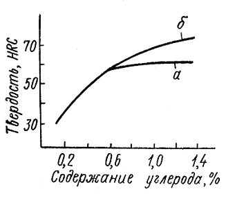
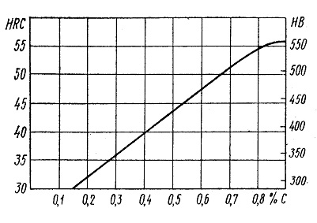
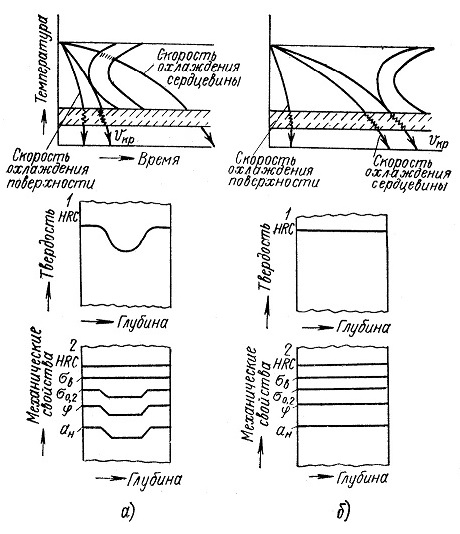

Закалкой называется нагрев стали выше критических точек, изотермическую выдержку и охлаждение с высокой скоростью в специальной среде – охладителе ( вода, водные растворы солей или щелочей, индустриальное масло ). Цель закалки – получение максимальной прочности и твердости. Различают полную и неполную закалку. Температура нагрева доэвтектоидной стали под закалку соответствует температуре полного отжига, а заэвтектоидной стали – температуре неполного отжига. В последнем случае сознательно оставляют в структуре нагретой стали цементит, как твердую фазу, конкурирующую по твердости с мартенситом (основной структурой закалки).
Закаливаемость — способность стали получать высокую твердость при закалке, что обеспечивается получением структуры мартенсита. Закаливаемость измеряется в единицах твердости и зависит, главным образом, от содержания углерода. Твердость мартенсита зависит от содержания в нем углерода. Твердость закаленной стали увеличивается пропорционально содержанию в ней углерода, но, начиная с 0,7 % С, твердость закаленной стали остается постоянной (HRC 63 — 65). Это объясняется тем, что закалка всех заэвтектоидных сталей производится с одной температуры (780°С), а поэтому у всех заэвтектоидных сталей состав аустенита при температуре закалки и состав мартенсита после закалки будет одинаков. У заэвтектоидных сталей с увеличением содержания углерода увеличивается количество вторичного цементита после закалки, что должно бы способствовать повышению твердости, но одновременно с этим увеличивается количество остаточного аустенита после закалки, а это ведет к снижению твердости. Поэтому твердость всех закаленных заэвтектоидных сталей практически остается постоянной.
Прокаливаемость — способность стали воспринимать закалку на большую или меньшую глубину, которая определяется твердостью полумартенситной зоны. Прокаливаемость измеряется в единицах длины (мм) и зависит от критической скорости закалки. Чем меньше критическая скорость закалки, тем больше прокаливаемость стали. Все факторы, которые увеличивают устойчивость переохлажденного аустенита, следовательно, уменьшают критическую скорость закалки, способствуют увеличению прокаливаемости. Наличие легирующих элементов и примесей, растворяющихся при нагреве в аустените, увеличение содержания углерода до 0,8 %, а также рост размера зерна аустенита повышают прокаливаемость стали. Легирующие элементы при температуре закалки в виде карбидов, интерметаллидов и других фаз, создающих неоднородность аустенита, уменьшают прокаливаемость стали.
Из диаграмм изотермического распада аустенита углеродистой и легированной стали видно, что при одинаковых скоростях охлаждения, сквозную закалку приобретает легированная сталь. Свойства ее по сечению после закалки одинаковые.
Несквозная прокаливаемость является следствием того, что сердцевина детали охлаждается со скоростью, меньше критической. Поэтому в сердцевине аустенит распадается на феррито-цементитную смесь. В сечениях же, где скорость охлаждения выше критической, аустенит превратится в мартенсит. Свойства по сечению такой закаленной стали неодинаковые.
Прокаливаемость является весьма важным фактором, определяющим свойства и область применения стали. Высокая прокаливаемость позволяет получить высокие механические свойства стали в массивных сечениях детали после термической обработки. Это особенно важно для ответственных деталей и конструкций, которые подвергаются термическому улучшению, т.е. закалке и высокому отпуску.
Количественной характеристикой прокаливаемости является критический (реальный) диаметр. Реальным или действительным критическим диаметром называют тот наибольший диаметр образца, при котором конструкционная сталь в данном охладителе прокаливается полностью, т.е. в центре образца твердость соответствует твердости полумартенситной зоны (зоны, состоящей из 50% мартенсита и 50% троостита). Критический диаметр, кроме критической скорости закалки стали, зависит от закаливающей среды.
Чтобы прокаливаемость не ставить в зависимость от способа (среды) охлаждения, вводится теоретическое понятие об идеальном критическом диаметре. Идеальный критический диаметр — это такой диаметр образца, у которого в центре при закалке в идеально охлаждающей жидкости получается полумартенситная структура. Идеально охлаждающая жидкость — это жидкость, отнимающая тепло с поверхности с бесконечно большой скоростью. Идеальный критический диаметр находится методом торцевой закалки.